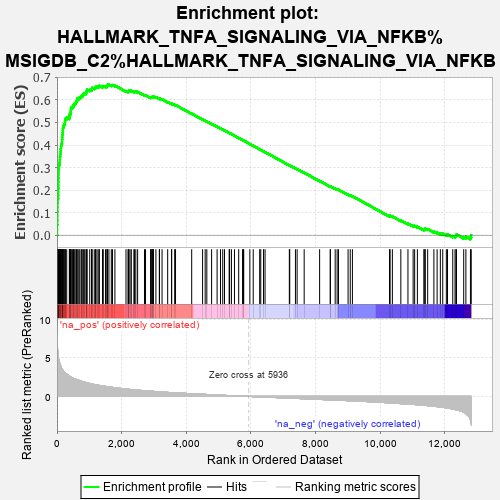
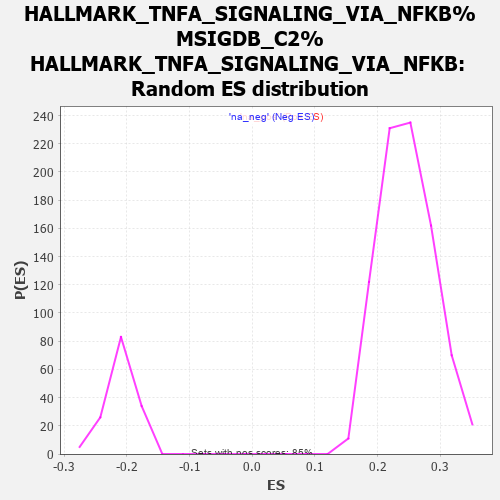

| | | Dataset | carrankstim |
| Phenotype | NoPhenotypeAvailable |
| Upregulated in class | na_pos |
| GeneSet | HALLMARK_TNFA_SIGNALING_VIA_NFKB%MSIGDB_C2%HALLMARK_TNFA_SIGNALING_VIA_NFKB |
| Enrichment Score (ES) | 0.6674451 |
| Normalized Enrichment Score (NES) | 2.7034836 |
| Nominal p-value | 0.0 |
| FDR q-value | 0.0 |
| FWER p-Value | 0.0 |
Table: GSEA Results Summary

Fig 1: Enrichment plot: HALLMARK_TNFA_SIGNALING_VIA_NFKB%MSIGDB_C2%HALLMARK_TNFA_SIGNALING_VIA_NFKB
Profile of the Running ES Score & Positions of GeneSet Members on the Rank Ordered List
| PROBE | GENE SYMBOL | GENE_TITLE | RANK IN GENE LIST | RANK METRIC SCORE | RUNNING ES | CORE ENRICHMENT | | 1 | CSF2 | | | 6 | 7.640 | 0.0226 | Yes |
| 2 | PTGS2 | | | 7 | 7.416 | 0.0451 | Yes |
| 3 | LIF | | | 12 | 6.820 | 0.0654 | Yes |
| 4 | EGR2 | | | 14 | 6.560 | 0.0852 | Yes |
| 5 | NR4A3 | | | 15 | 6.433 | 0.1046 | Yes |
| 6 | CCL4 | | | 17 | 6.402 | 0.1239 | Yes |
| 7 | IL1A | | | 19 | 6.256 | 0.1428 | Yes |
| 8 | TNFRSF9 | | | 21 | 6.053 | 0.1610 | Yes |
| 9 | FOSL1 | | | 37 | 5.368 | 0.1760 | Yes |
| 10 | SDC4 | | | 40 | 5.210 | 0.1917 | Yes |
| 11 | IER3 | | | 41 | 5.208 | 0.2074 | Yes |
| 12 | TNF | | | 45 | 5.094 | 0.2226 | Yes |
| 13 | NR4A1 | | | 46 | 5.029 | 0.2378 | Yes |
| 14 | EGR3 | | | 48 | 5.001 | 0.2528 | Yes |
| 15 | DUSP5 | | | 50 | 4.916 | 0.2676 | Yes |
| 16 | FOS | | | 51 | 4.863 | 0.2824 | Yes |
| 17 | HBEGF | | | 54 | 4.814 | 0.2968 | Yes |
| 18 | G0S2 | | | 61 | 4.703 | 0.3105 | Yes |
| 19 | NR4A2 | | | 77 | 4.427 | 0.3227 | Yes |
| 20 | EGR1 | | | 86 | 4.327 | 0.3352 | Yes |
| 21 | PHLDA1 | | | 89 | 4.287 | 0.3480 | Yes |
| 22 | GEM | | | 101 | 4.091 | 0.3595 | Yes |
| 23 | PHLDA2 | | | 109 | 4.010 | 0.3711 | Yes |
| 24 | TNC | | | 114 | 3.975 | 0.3828 | Yes |
| 25 | FOSB | | | 124 | 3.895 | 0.3939 | Yes |
| 26 | NAMPT | | | 131 | 3.819 | 0.4049 | Yes |
| 27 | CSF1 | | | 157 | 3.517 | 0.4136 | Yes |
| 28 | SIK1 | | | 159 | 3.512 | 0.4241 | Yes |
| 29 | TNFSF9 | | | 164 | 3.480 | 0.4344 | Yes |
| 30 | CD80 | | | 167 | 3.467 | 0.4447 | Yes |
| 31 | DUSP4 | | | 174 | 3.427 | 0.4546 | Yes |
| 32 | SOCS3 | | | 179 | 3.415 | 0.4646 | Yes |
| 33 | CXCL10 | | | 183 | 3.391 | 0.4746 | Yes |
| 34 | CD83 | | | 194 | 3.299 | 0.4838 | Yes |
| 35 | CDKN1A | | | 216 | 3.161 | 0.4917 | Yes |
| 36 | RHOB | | | 245 | 3.034 | 0.4987 | Yes |
| 37 | ATF3 | | | 249 | 3.026 | 0.5076 | Yes |
| 38 | SGK1 | | | 257 | 3.006 | 0.5161 | Yes |
| 39 | FJX1 | | | 300 | 2.889 | 0.5215 | Yes |
| 40 | YRDC | | | 382 | 2.621 | 0.5231 | Yes |
| 41 | SPHK1 | | | 387 | 2.615 | 0.5307 | Yes |
| 42 | PLAU | | | 394 | 2.603 | 0.5381 | Yes |
| 43 | RELB | | | 424 | 2.520 | 0.5434 | Yes |
| 44 | LDLR | | | 425 | 2.516 | 0.5510 | Yes |
| 45 | TUBB2A | | | 430 | 2.504 | 0.5583 | Yes |
| 46 | NFKBIA | | | 434 | 2.500 | 0.5656 | Yes |
| 47 | ICAM1 | | | 477 | 2.412 | 0.5696 | Yes |
| 48 | BHLHE40 | | | 510 | 2.353 | 0.5741 | Yes |
| 49 | TRIB1 | | | 518 | 2.321 | 0.5806 | Yes |
| 50 | CCL20 | | | 548 | 2.276 | 0.5852 | Yes |
| 51 | NFIL3 | | | 586 | 2.216 | 0.5890 | Yes |
| 52 | CD69 | | | 599 | 2.196 | 0.5947 | Yes |
| 53 | AREG | | | 620 | 2.158 | 0.5996 | Yes |
| 54 | NFKB2 | | | 621 | 2.157 | 0.6062 | Yes |
| 55 | BTG3 | | | 673 | 2.090 | 0.6084 | Yes |
| 56 | BCL2A1 | | | 704 | 2.050 | 0.6123 | Yes |
| 57 | KDM6B | | | 747 | 1.984 | 0.6149 | Yes |
| 58 | VEGFA | | | 765 | 1.957 | 0.6195 | Yes |
| 59 | BIRC3 | | | 801 | 1.918 | 0.6226 | Yes |
| 60 | FOSL2 | | | 814 | 1.898 | 0.6273 | Yes |
| 61 | GADD45B | | | 856 | 1.845 | 0.6297 | Yes |
| 62 | RCAN1 | | | 902 | 1.798 | 0.6316 | Yes |
| 63 | CCND1 | | | 903 | 1.795 | 0.6370 | Yes |
| 64 | JUNB | | | 924 | 1.775 | 0.6408 | Yes |
| 65 | MYC | | | 928 | 1.771 | 0.6459 | Yes |
| 66 | IL15RA | | | 1012 | 1.675 | 0.6444 | Yes |
| 67 | BCL3 | | | 1067 | 1.626 | 0.6451 | Yes |
| 68 | TRIP10 | | | 1075 | 1.616 | 0.6494 | Yes |
| 69 | DUSP2 | | | 1086 | 1.604 | 0.6534 | Yes |
| 70 | NFKBIE | | | 1152 | 1.540 | 0.6530 | Yes |
| 71 | IER5 | | | 1189 | 1.505 | 0.6547 | Yes |
| 72 | IL23A | | | 1202 | 1.495 | 0.6582 | Yes |
| 73 | MAP2K3 | | | 1240 | 1.464 | 0.6597 | Yes |
| 74 | ETS2 | | | 1292 | 1.431 | 0.6600 | Yes |
| 75 | PTGER4 | | | 1311 | 1.421 | 0.6629 | Yes |
| 76 | GADD45A | | | 1407 | 1.353 | 0.6595 | Yes |
| 77 | PLAUR | | | 1431 | 1.341 | 0.6617 | Yes |
| 78 | RNF19B | | | 1499 | 1.298 | 0.6604 | Yes |
| 79 | B4GALT5 | | | 1543 | 1.270 | 0.6608 | Yes |
| 80 | KLF10 | | | 1554 | 1.265 | 0.6638 | Yes |
| 81 | MAFF | | | 1560 | 1.262 | 0.6673 | Yes |
| 82 | IFNGR2 | | | 1606 | 1.239 | 0.6674 | Yes |
| 83 | IFIH1 | | | 1680 | 1.191 | 0.6653 | No |
| 84 | IFIT2 | | | 1716 | 1.173 | 0.6661 | No |
| 85 | SERPINB8 | | | 1791 | 1.123 | 0.6636 | No |
| 86 | NINJ1 | | | 2134 | 0.964 | 0.6395 | No |
| 87 | STAT5A | | | 2196 | 0.935 | 0.6375 | No |
| 88 | NFKB1 | | | 2212 | 0.925 | 0.6391 | No |
| 89 | TAP1 | | | 2224 | 0.922 | 0.6410 | No |
| 90 | REL | | | 2259 | 0.904 | 0.6410 | No |
| 91 | DRAM1 | | | 2299 | 0.889 | 0.6406 | No |
| 92 | PANX1 | | | 2378 | 0.860 | 0.6371 | No |
| 93 | PLK2 | | | 2399 | 0.851 | 0.6381 | No |
| 94 | MAP3K8 | | | 2438 | 0.839 | 0.6376 | No |
| 95 | TANK | | | 2494 | 0.814 | 0.6357 | No |
| 96 | EIF1 | | | 2706 | 0.738 | 0.6212 | No |
| 97 | TNIP2 | | | 2738 | 0.727 | 0.6210 | No |
| 98 | GCH1 | | | 2895 | 0.676 | 0.6107 | No |
| 99 | ID2 | | | 2906 | 0.673 | 0.6119 | No |
| 100 | TNFAIP2 | | | 2930 | 0.664 | 0.6121 | No |
| 101 | BTG2 | | | 2944 | 0.659 | 0.6131 | No |
| 102 | ZC3H12A | | | 2961 | 0.656 | 0.6138 | No |
| 103 | CEBPB | | | 2971 | 0.652 | 0.6151 | No |
| 104 | NFE2L2 | | | 2984 | 0.650 | 0.6161 | No |
| 105 | IRF1 | | | 3059 | 0.624 | 0.6121 | No |
| 106 | KLF6 | | | 3166 | 0.592 | 0.6055 | No |
| 107 | PLEK | | | 3169 | 0.591 | 0.6071 | No |
| 108 | PPP1R15A | | | 3249 | 0.566 | 0.6026 | No |
| 109 | TRAF1 | | | 3423 | 0.518 | 0.5905 | No |
| 110 | SLC2A6 | | | 3544 | 0.489 | 0.5825 | No |
| 111 | KLF9 | | | 3546 | 0.489 | 0.5839 | No |
| 112 | JUN | | | 3640 | 0.469 | 0.5779 | No |
| 113 | RIPK2 | | | 3666 | 0.463 | 0.5774 | No |
| 114 | TNFAIP3 | | | 4166 | 0.351 | 0.5389 | No |
| 115 | CCRL2 | | | 4503 | 0.279 | 0.5132 | No |
| 116 | SLC2A3 | | | 4583 | 0.262 | 0.5077 | No |
| 117 | MSC | | | 4634 | 0.251 | 0.5045 | No |
| 118 | PTPRE | | | 4782 | 0.218 | 0.4936 | No |
| 119 | NFAT5 | | | 4952 | 0.179 | 0.4807 | No |
| 120 | PDLIM5 | | | 5057 | 0.159 | 0.4730 | No |
| 121 | TNIP1 | | | 5126 | 0.146 | 0.4681 | No |
| 122 | SLC16A6 | | | 5180 | 0.136 | 0.4643 | No |
| 123 | SQSTM1 | | | 5325 | 0.106 | 0.4532 | No |
| 124 | FUT4 | | | 5338 | 0.104 | 0.4526 | No |
| 125 | PFKFB3 | | | 5395 | 0.094 | 0.4484 | No |
| 126 | LAMB3 | | | 5489 | 0.080 | 0.4413 | No |
| 127 | RELA | | | 5620 | 0.055 | 0.4312 | No |
| 128 | CFLAR | | | 5739 | 0.033 | 0.4219 | No |
| 129 | TNFAIP8 | | | 5770 | 0.027 | 0.4197 | No |
| 130 | BCL6 | | | 5774 | 0.026 | 0.4195 | No |
| 131 | ZBTB10 | | | 5965 | -0.004 | 0.4045 | No |
| 132 | MCL1 | | | 6069 | -0.022 | 0.3964 | No |
| 133 | IER2 | | | 6269 | -0.059 | 0.3808 | No |
| 134 | PDE4B | | | 6302 | -0.065 | 0.3785 | No |
| 135 | CD44 | | | 6388 | -0.079 | 0.3720 | No |
| 136 | SOD2 | | | 6435 | -0.087 | 0.3686 | No |
| 137 | SERPINE1 | | | 7186 | -0.217 | 0.3099 | No |
| 138 | DENND5A | | | 7199 | -0.220 | 0.3097 | No |
| 139 | DDX58 | | | 7375 | -0.252 | 0.2966 | No |
| 140 | JAG1 | | | 7427 | -0.261 | 0.2933 | No |
| 141 | PER1 | | | 7645 | -0.297 | 0.2771 | No |
| 142 | CLCF1 | | | 8123 | -0.384 | 0.2405 | No |
| 143 | ICOSLG | | | 8452 | -0.442 | 0.2159 | No |
| 144 | DNAJB4 | | | 8455 | -0.443 | 0.2171 | No |
| 145 | BIRC2 | | | 8604 | -0.472 | 0.2068 | No |
| 146 | MARCKS | | | 8665 | -0.484 | 0.2035 | No |
| 147 | CCNL1 | | | 8706 | -0.491 | 0.2018 | No |
| 148 | EDN1 | | | 9003 | -0.545 | 0.1800 | No |
| 149 | GPR183 | | | 9070 | -0.559 | 0.1765 | No |
| 150 | TGIF1 | | | 9137 | -0.573 | 0.1730 | No |
| 151 | BMP2 | | | 10285 | -0.830 | 0.0848 | No |
| 152 | SAT1 | | | 10303 | -0.836 | 0.0860 | No |
| 153 | DUSP1 | | | 10373 | -0.853 | 0.0831 | No |
| 154 | IL6ST | | | 10635 | -0.927 | 0.0652 | No |
| 155 | LITAF | | | 10855 | -0.985 | 0.0509 | No |
| 156 | ATP2B1 | | | 11015 | -1.031 | 0.0414 | No |
| 157 | B4GALT1 | | | 11062 | -1.045 | 0.0410 | No |
| 158 | SNN | | | 11147 | -1.074 | 0.0376 | No |
| 159 | TLR2 | | | 11346 | -1.145 | 0.0254 | No |
| 160 | EHD1 | | | 11374 | -1.155 | 0.0267 | No |
| 161 | MXD1 | | | 11390 | -1.161 | 0.0290 | No |
| 162 | BTG1 | | | 11465 | -1.187 | 0.0268 | No |
| 163 | ABCA1 | | | 11657 | -1.275 | 0.0155 | No |
| 164 | SMAD3 | | | 11757 | -1.318 | 0.0117 | No |
| 165 | PNRC1 | | | 11857 | -1.367 | 0.0080 | No |
| 166 | TSC22D1 | | | 11931 | -1.414 | 0.0065 | No |
| 167 | CEBPD | | | 12042 | -1.479 | 0.0023 | No |
| 168 | TIPARP | | | 12079 | -1.507 | 0.0040 | No |
| 169 | ZFP36 | | | 12241 | -1.620 | -0.0039 | No |
| 170 | CCL5 | | | 12311 | -1.696 | -0.0042 | No |
| 171 | IRS2 | | | 12342 | -1.731 | -0.0013 | No |
| 172 | SPSB1 | | | 12356 | -1.739 | 0.0029 | No |
| 173 | ACKR3 | | | 12579 | -2.029 | -0.0085 | No |
| 174 | IL7R | | | 12647 | -2.217 | -0.0071 | No |
| 175 | KLF2 | | | 12788 | -3.037 | -0.0090 | No |
| 176 | GFPT2 | | | 12812 | -3.634 | 0.0002 | No |
Table: GSEA details [plain text format]

Fig 2: HALLMARK_TNFA_SIGNALING_VIA_NFKB%MSIGDB_C2%HALLMARK_TNFA_SIGNALING_VIA_NFKB: Random ES distribution
Gene set null distribution of ES for HALLMARK_TNFA_SIGNALING_VIA_NFKB%MSIGDB_C2%HALLMARK_TNFA_SIGNALING_VIA_NFKB